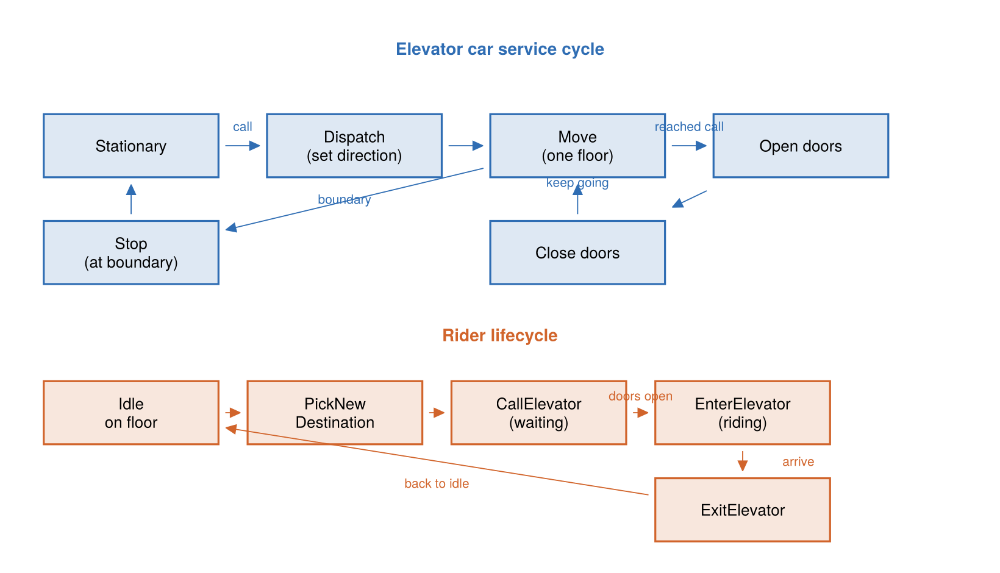

The Elevator Model
The elevator example is a continuous-time port of a well-known TLA+ specification. It models a building with several elevator cars, a set of people who travel between floors, and a simple dispatcher that decides which car answers which call.
Where it comes from
The model is a Julia/ChronoSim port of the Elevator module from the tlaplus/Examples collection. The header of src/elevator/elevator.jl records the provenance:
# This implements a set of elevators and people interacting.
# The spec comes from https://github.com/tlaplus/Examples which has
# elevator.tla, the MODULE Elevator.
#
# Run the .tla with `java -jar tla2tools.jar -config Elevator.cfg Elevator.tla`.The original specification is kept in the repository at src/elevator/Elevator.tla as provenance documentation. Its own module comment describes the design:
This spec describes a simple multi-car elevator system. The actions in this spec are unsurprising and common to all such systems except for
DispatchElevator, which contains the logic to determine which elevator ought to service which call. The algorithm used is very simple and does not optimize for global throughput or average wait time.
The Julia model mirrors the TLA+ variables, its nine actions, and its type and safety invariants. The important difference is that the TLA+ spec is untimed — it describes which actions are legal, not when they happen — while the ChronoSim port draws a waiting time for every action from an Exponential(1.0) clock, so the model becomes a continuous-time stochastic simulation.
src/elevator/elevator_tla_example.jl is a stale demo that references APIs the model no longer exposes; it will not run. The TLA+/TLC trace glue was also retired to attic/elevatortla.jl. Model-checking validation now goes through Quint (test/test_quint.jl). Do not treat either as a live example.
What it models
A building with a fixed number of floors, a fixed set of people, and a fixed set of elevator cars. People decide to travel to another floor, press a hall call, board a car whose doors open in their direction, ride to their destination, and leave. Each car moves up or down one floor at a time, opens and closes its doors, and tracks the destination buttons its passengers have pressed. A dispatcher assigns the closest stationary or already-approaching car to each active call.
State
The state is declared with ChronoSim's ObservedState macros, so the framework observes every read a precondition makes and every write a firing makes. There are four keyed record types and one top-level observed state.
A direction enum carries a content-based hash so that clock keys built from it reproduce across processes and modules — a detail that matters when the hand-written and derived twins compare trajectories:
@enum ElevatorDirection Up Down Stationary
Base.hash(x::ElevatorDirection, h::UInt) = hash(Symbol(x), h)A Person is keyed by an integer id:
@keyedby Person Int64 begin
location::Int64 # floor the person is on; 0 while riding
destination::Int64 # target floor
elevator::Int64 # elevator id they are in; 0 if not riding
waiting::Bool # waiting for a called elevator
endAn ElevatorCall is keyed by a (floor, direction) pair and records whether that hall call is currently active:
@keyedby ElevatorCall Tuple{Int64,ElevatorDirection} begin
requested::Bool
endAn Elevator is keyed by an integer id:
@keyedby Elevator Int64 begin
floor::Int64
direction::ElevatorDirection # Up, Down, or Stationary
doors_open::Bool
buttons_pressed::Set{Int64} # destination floors selected inside the car
endThe whole building is the observed physical state:
@observedphysical ElevatorSystem begin
person::ObservedVector{Person,Member}
calls::ObservedDict{Tuple{Int64,ElevatorDirection},ElevatorCall,Member}
elevator::ObservedVector{Elevator,Member}
floor_cnt::Int64
endThe constructor ElevatorSystem(person_cnt, elevator_cnt, floor_cnt) starts everyone on floor 1, creates an inactive call for every (floor, direction) pair, and parks every car stationary on floor 1 with its doors closed. A Base.show method pretty-prints the building floor by floor, marking cars, active up/down calls, and the people on each floor — useful when watching a run.
Events
There are exactly nine event types, matching the nine TLA+ actions. Every event is a struct <: SimEvent, uses the timing enable(...) = (Exponential(1.0), when), and defines three things: a set of triggers (which state changes propose the event), a precondition (whether it may fire), and fire! (its effect).
| Event | Fires when | Effect |
|---|---|---|
PickNewDestination(person) | an idle person on a floor | chooses a random destination floor different from the current one |
CallElevator(person) | a person's destination differs from their floor and they are not yet waiting | marks the person waiting and raises the hall call for their direction |
OpenElevatorDoors(elevator) | a car reaches a floor with a matching call or a pressed button | opens the doors, clears the button and the call |
EnterElevator(elevator) | doors open with people waiting to go that direction | boards every matching waiter and presses their destination buttons |
ExitElevator(elevator) | doors open with a passenger whose destination is this floor | lets those passengers out |
CloseElevatorDoors(elevator) | doors are open and nobody needs to board or exit | closes the doors |
MoveElevator(elevator) | doors closed, a direction set, and no reason to stop here | moves the car one floor |
StopElevator(elevator) | doors closed at a boundary floor with no reason to open | sets the car stationary |
DispatchElevator(floor, direction) | an active call with a stationary or approaching car available | steers the closest suitable car toward the call |

The nine events split into two coupled loops: a car cycles through dispatch, motion, and door handling, while a rider picks a destination, calls, boards, rides, and exits.Three of these preconditions are worth noting because they show ChronoSim's more advanced features:
CloseElevatorDoorscalls the preconditions ofEnterElevatorandExitElevatorinside its own precondition — it may close the doors only when neither of those events could fire. This "precondition recursion" keeps the rules consistent instead of duplicating them.StopElevatorsimilarly callsOpenElevatorDoors' precondition: a car stops only when it is at a boundary floor and is not about to open its doors.MoveElevatorencodes the TLA+ rule that a car may pass a call it could service only when another car is able to service that call.
Small helpers such as get_direction, can_service_call, and people_waiting are marked @fragment so ChronoSim can inline their bodies into the static analysis when a precondition passes state into them.
Invariants
The model declares eight @invariant blocks — pure boolean checks over the physical state — that mirror the TLA+ type and safety invariants. Among them: a person is either on a floor or in an elevator but never both ("person location xor elevator"), every pressed button corresponds to a real passenger ("pressed button has passenger"), and there are no active calls without a waiting person ("no ghost calls"). Running under the CheckInvariants policy verifies all of them after every fired event; see Running the Elevator.
The derived twin
The module ElevatorDerivedExample in src/elevator/elevator_derived.jl is a parallel copy of the model in which the event triggers are derived from the precondition bodies instead of being written by hand. In the hand-written model, each event declares its triggers explicitly with @conditionsfor / @reactto changed(...) blocks. In the derived twin those blocks are gone; each precondition is marked @precondition, and ChronoSim statically analyzes it — every state field the precondition reads becomes a trigger.
Because both twins key their clocks by nameof(type), a hand-written MoveElevator and a derived MoveElevator share the same clock key, so the two versions produce identical trajectories from the same seed. That equivalence is more than a curiosity: several fixes in the hand-written model — the location != 0 guard added to CallElevator, and the extra triggers added to StopElevator — were discovered by running the two twins side by side and finding where their trajectories diverged. The debugging tools page shows those comparisons in action.